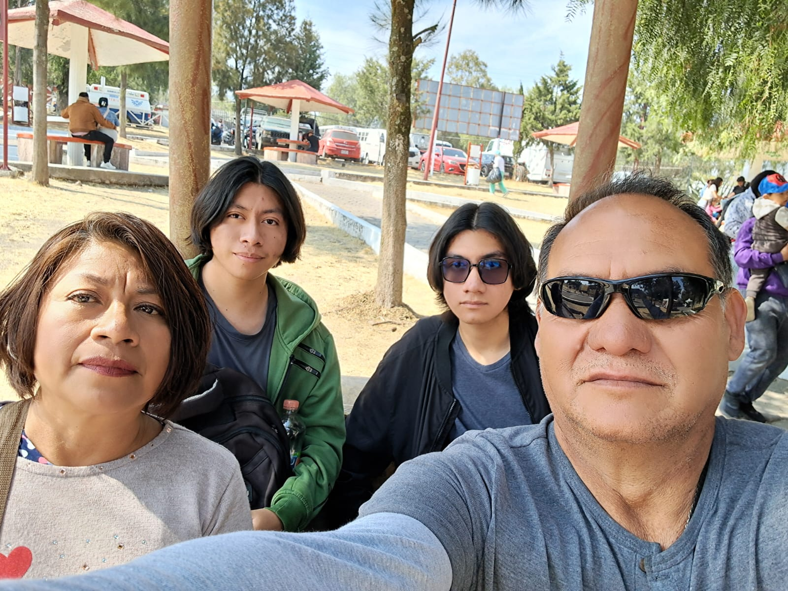
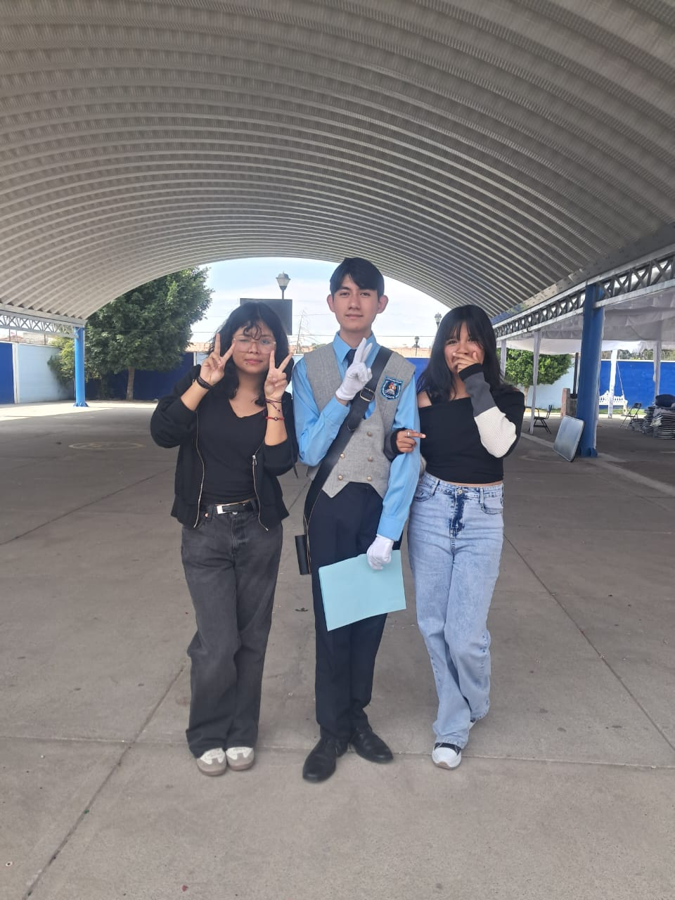
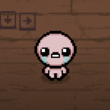
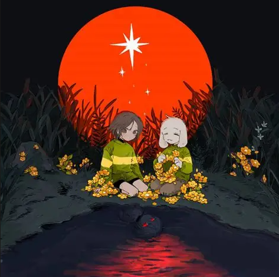
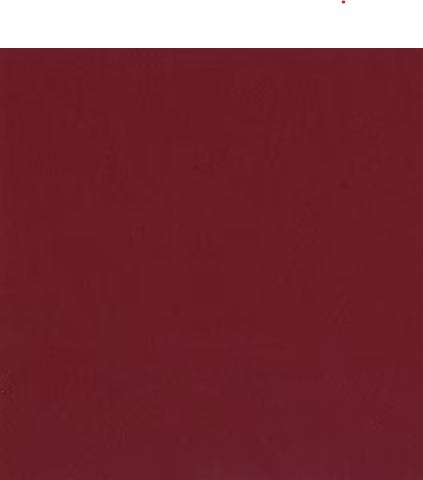

Hola! Mi nombre es Sebastian Alonso Sanchez, pero me llaman tambien solo Sebas
Tengo actualmende 16 años y vivo en el municipio de atenco.
Soy estudiante de la vocacional 3, actualmente cursando el segundo semestre, y me gustaria para tercer semestre estudiar la carrera tecnica de computacion o sistemas digitales.
Me gustan las matematicas, las fisica, y la computacion.
Tambien tengo un enorme interes por los videojuegos, principalmente por los del genero roguelike (como the binding of isaac y mewgenics), asi como tambien me gusta crearlos, en el motor de godot engine y con c++. Mi estilo de arte favorito es el pixelart. Y escucho varios tipos de musica, principalmente me gusta la musica electronica y clasica :).
Mis papas se llaman Silvia y Silverio, tengo un hermano llamado Eduardo y un hermanastro llamado Ivan. Tambien tengo a dos perros y a 4 periquitos.

Mis amigos mas cercanos y a los cuales mas aprecio tengo son Liam, Dannae y Luna, quienes conozco desde la secundaria.

Me considero una persona altamente proactiva, responsable y respetuosa. Me gusta ayudar a los demas siempre que lo necesiten y orientarlos en lo que pueda. Tambien me considero alguien amable y amistoso.
Considero que a veces no logro manejar muy bien el estres, ademas de que soy bastate aislado con las personas, y ademas de que cuando algo me aburre lo pospongo o lo hago sin demasiadas ganas.
Primero, me gustaria graduarme del CECyT en la carrera de computacion, y tambien entrar en la ESFM, para estudiar la carrera de fisica-matematica, con ello me gustaria trabajar en investigaciones de este campo y como profesor :D.
| Mi Juego Favorito | Mi Comida Favorita | Mi Cancion Favorita | Mi Color Favorito |
|---|---|---|---|
|
 The binding of isaac |
Enchiladas Verdes |
 Cacola-The Angel |
 Rojo Carmesi |
|
|
|||